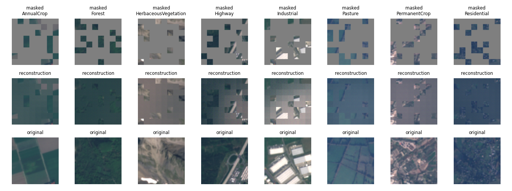
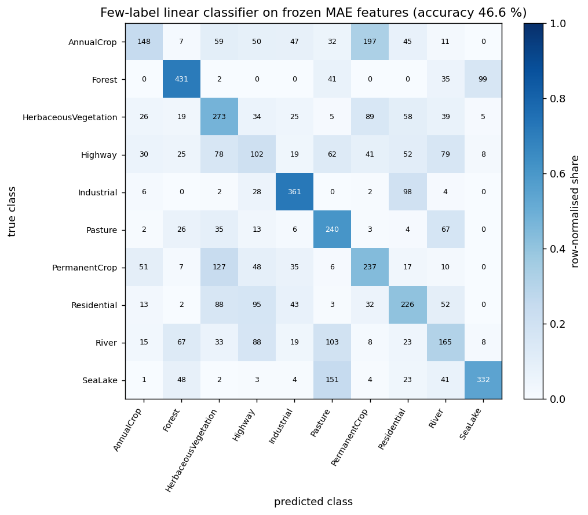
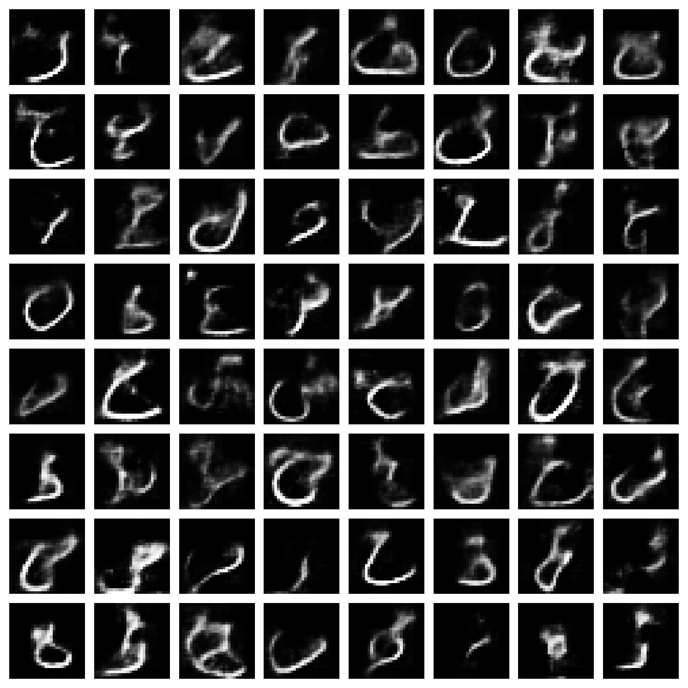
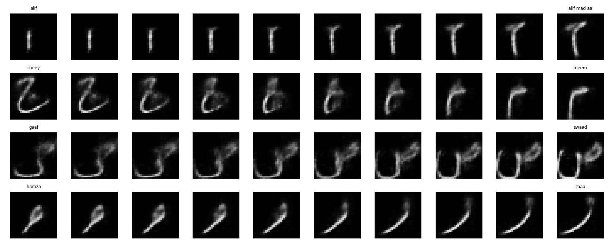
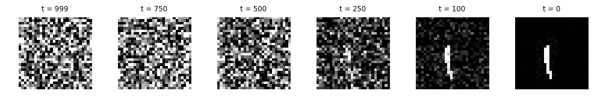
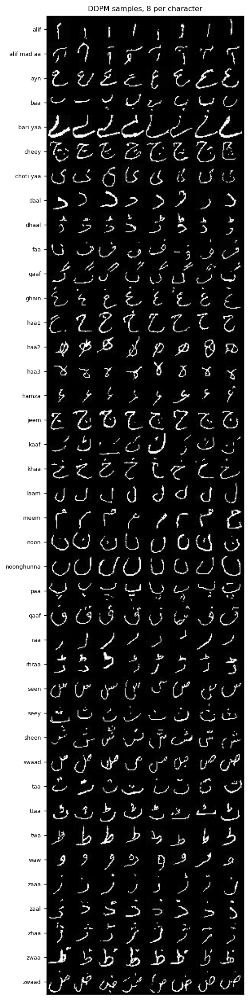
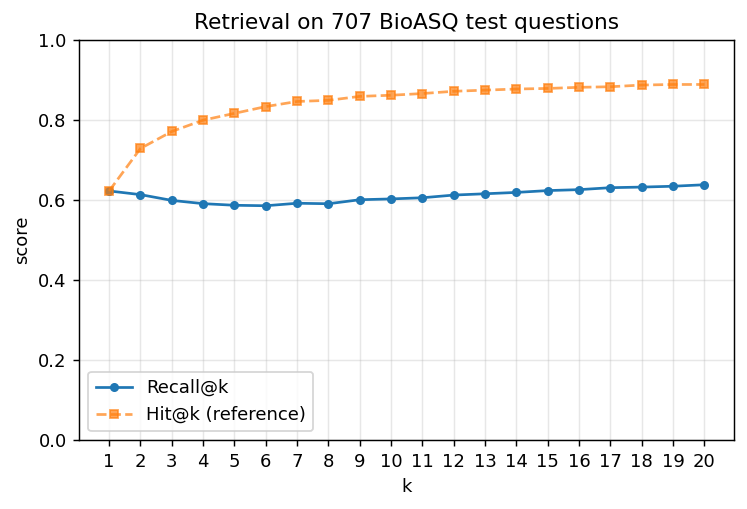

Masked autoencoder
Hide 75% of a satellite tile (48 of 64 patches) and train a small transformer to paint them back, with no labels. Loss is counted on the hidden patches only.


Variational autoencoder
Each handwritten character is squeezed into 16 numbers. Training balances reconstruction against a KL term that keeps the code space usable for sampling.


Diffusion model
A U-Net learns to remove noise over 1,000 steps. Given a character name it turns pure noise into new handwriting. Sharper than the VAE, but 1,000 network calls per sample.


RAG with sources
40,181 PubMed abstracts become 79,332 chunks. MiniLM finds the five best chunks for a question and Qwen2.5-1.5B answers from them, citing passage numbers.

Retrieval failed on 14% of questions, mostly rare drug and protein names. Every answer carries: For educational use only. Not medical advice.